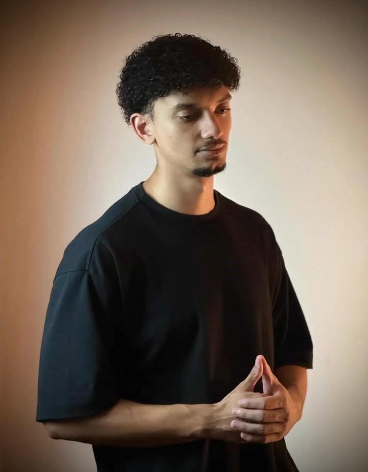

Disponível para Projetos
Criatividade em Dobro.
Nós unimos visão estratégica de negócios, engenharia de inteligência artificial e arquitetura avançada para construir sistemas inteligentes.
João Vitor
Estrategista Digital

Fábio Cavalcante
Engenheiro de I.A &
Criador de Sistemas
Criador de Sistemas
Rolar página